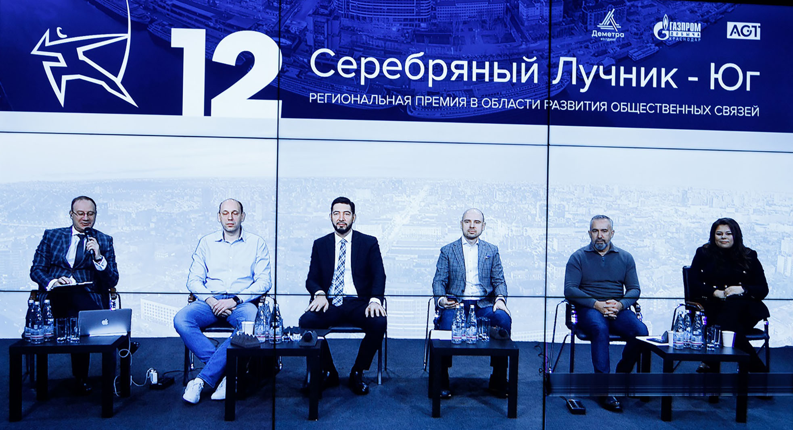
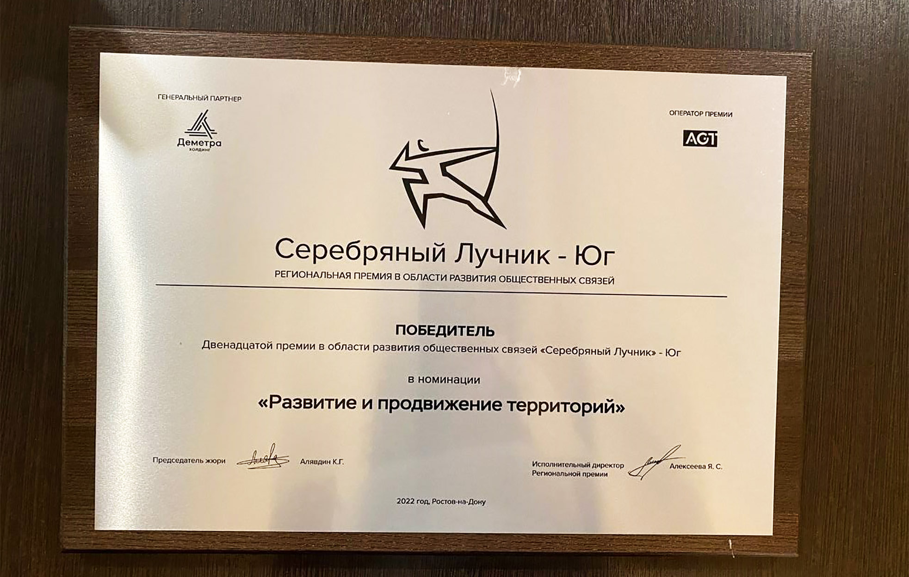

Проект портала «Кавказ Сегодня» стал лауреатом премии «Серебряный Лучник» — Юг
Фильм «Вершины Кавказа» назван лучшим кейсом по «Развитию и продвижению территорий»
Накануне, 7 февраля, прошли защиты PR-проектов, вошедших в шорт-лист XII премии в области развития общественных связей «Серебряный Лучник» — Юг (Ростов-на-Дону), которая входит в систему региональных конкурсов Национальной премии «Серебряный Лучник» — одной из самых авторитетных и престижных PR-премий в России.
Вечером того же дня экспертами во главе с председателем жюри Кириллом Алявдиным были объявлены лауреаты в нескольких номинациях. В число победителей вошли проекты из Краснодара, Ростова-на-Дону, Грозного, Пятигорска, Туапсе и Элисты.
В нынешнем году за звание лауреатов боролись более 50 соискателей. И только 24 проекта вошли в шорт-лист, получив допуск к защите. В число победителей вошёл трехсерийный документальный фильм «Вершины Кавказа» информационно-аналитического портала «Кавказ Сегодня» из Пятигорска, который был признан лучшим кейсом по «Развитию и продвижению территорий»
Напомним, премьера третьей серии документального фильма о людях, их жизни, вероисповедании и взаимоотношениях с представителями других религий фильма «Вершины Кавказа» состоялась 5 ноября 2021 года. Первые две серии фильма «Вершины Кавказа» вышли осенью 2020 года на YouTube-канале портала «Кавказ Сегодня». Все они набрали 10 миллионов просмотров и вызвали живой отклик аудитории.
В разных сериях фильма рассказывается об основных монотеистических религиях: христианстве и исламе, показаны истории жителей регионов Северного Кавказа и тех, кто приехал в этот благодатный край в духовном поиске. Сквозь личные истории героев фильма и их душевные переживания красной нитью также проходит тема истории армяно-григорианский церкви, старообрядчества, молоканства, католичества, иудаизма, буддизма на Северном Кавказе, а также обычаев, традиций и ценностей представителей данных конфессий.
По мнению руководителя проекта Николая Павлова, подобный формат документального кино весьма востребован в современном мире:
Молодые жители регионов России зачастую не знают
о вероисповедании людей, живущих с ними рядом,
и порой могут ненароком оскорбить их, сами
того не желая. А основным принципом для
достижения межнационального и межэтнического
понимания является знание, принятие и уважение
религиозно-конфессиональных ценностей и идей
представителей других вероисповеданий. С этой целью
и создан многосерийный фильм «Вершины
Кавказа.
Итоги премии «Серебряный Лучник» — Юг прокомментировала её исполнительный директор Яна Алексеева, генеральный директор коммуникационного агентства «АГТ-Юг»:
Число проектов, поданных на конкурс
за 12 лет, перевалило за тысячу.
Представители бизнес-структур со всего юга страны
продолжают заявлять свои коммуникационные проекты,
несмотря на постоянно меняющиеся за последние
два года условия внешней среды, к которым рынку
приходится приспосабливаться чрезвычайно оперативно.
Так, „Серебряный Лучник“ —
Юг продолжает свое уверенное движение
по развитию рынка коммуникаций и закреплению
высоких профессиональных стандартов в области сферы
общественных связей
Кроме того, в рамках проведения награждения лауреатов, ещё один специальный приз от партнера премии «Мастерской новых медиа» — образовательной программы по подготовке кадров в области интернет-коммуникаций — получила команда информационно-аналитического портала «Кавказ Сегодня» из Пятигорска. Один из членов этой команды теперь сможет претендовать на обучение в Мастерской в Москве, минуя творческую часть отбора.
Справочно
Национальная премия в области развития общественных связей «Серебряный Лучник» была учреждена 25 июня 1997 года Торгово-Промышленной палатой РФ, Союзом журналистов РФ и Российской ассоциацией по связям с общественностью. За эти годы в конкурсе на соискание высшей профессиональной награды приняло участие более 4500 проектов.
Оператором региональной Премии выступает Коммуникационное агентство «АГТ-Юг», AGT Communications Group. Генеральный партнер: «Деметра-Холдинг». Партнеры: ООО «Газпром добыча Краснодар», «Мастерская новых медиа» платформы «Россия — страна возможностей».
фото предоставлено организаторами Премии «Серебряный лучник»